编程
CC Switch 接入教程
完整复刻源站 CC Switch 教程密度：核心特性、Provider/MCP/Prompts 管理、词元.fast 接入和三端安装方式。
🔀 CC Switch 是一款开源、跨平台的 AI CLI 统一管理工具，支持 Claude Code、Codex 和 Gemini CLI 的 Provider 配置一键切换、MCP 服务器统一管理、系统提示词（Prompts）管理以及 Skills 扩展管理， 让你在多个 AI 编程助手之间自由切换，无需手动编辑配置文件。
- GitHub 仓库：https://github.com/farion1231/cc-switch
- 下载地址：GitHub Releases
核心特性
🔌 Provider 管理
- 一键切换 — 在 Claude Code、Codex、Gemini 的 API 配置之间一键切换，无需手动修改环境变量或配置文件
- 多端点支持 — 每个 Provider 可配置多个端点，支持 API Key 管理与延迟测速
- 4 层模型配置 — 支持 Haiku / Sonnet / Opus / Custom 四级模型粒度配置
🛠️ MCP 服务器管理
- 跨应用统一管理 — 单面板管理 Claude / Codex / Gemini 三端的 MCP 服务器
- 三种传输类型 — 支持 stdio、HTTP、SSE（Server-Sent Events）
- 自动同步 — 统一导入导出 + 双向同步
💬 Prompts 管理
- 多预设系统提示词 — 无限预设、快速切换
- 跨应用支持 — Claude（
CLAUDE.md）、Codex（AGENTS.md）、Gemini（GEMINI.md）
- Markdown 编辑器 — CodeMirror 6 + 实时预览
🌐 多平台支持
- 桌面应用 — Windows、macOS、Linux 原生安装包
- Web 版本 — 适用于无头服务器 / SSH 远程环境的浏览器访问方案
- CLI 版本 — 命令行交互模式与命令模式双支持
通过 cc-Switch 调用词元.fast 模型
原理解析
cc-Switch 会帮你维护 Claude Code 所需的 Provider 配置，核心是动态写入 ANTHROPIC_BASE_URL 和 ANTHROPIC_API_KEY。Claude Code 原本发往官方接口的请求，会被切换到你配置的词元.fast 接口。
- 不用手动编辑复杂配置：把常用 API 方案保存为 Provider，需要时一键切换。
- 适合多模型工作流：同一个 cc-Switch 中可保存不同模型、不同端点，便于在 Claude Code 场景里快速试用。
前置准备
开始配置前，先准备三项信息：API Key、Base URL、模型名称。
1. 创建并复制词元.fast API Key
打开 词元.fast API 密钥页面，创建一个专用于 Claude Code / cc-Switch 的密钥。创建成功后立刻复制，后面会粘贴到 cc-Switch 的 API Key 字段。

2. 获取模型名称
进入词元.fast 控制台的模型列表，选择你要给 Claude Code 使用的模型，复制模型 ID。模型名称必须和控制台显示一致。
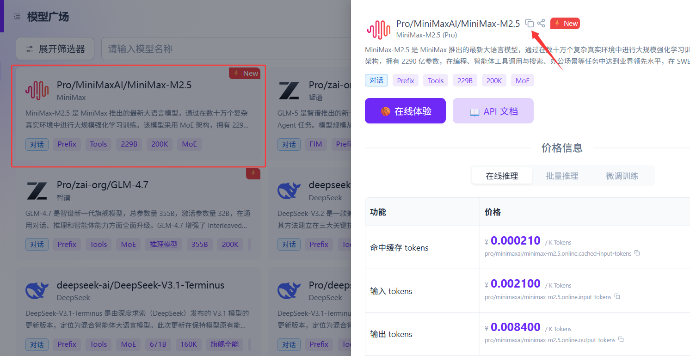
3. 确认 Base URL
cc-Switch 的 Claude Provider 这里填写词元.fast 接口地址：
Base URL: https://ciyuan.fast
API Key: 你的词元.fast API Key
模型名称: 词元.fast 控制台中可用的模型 ID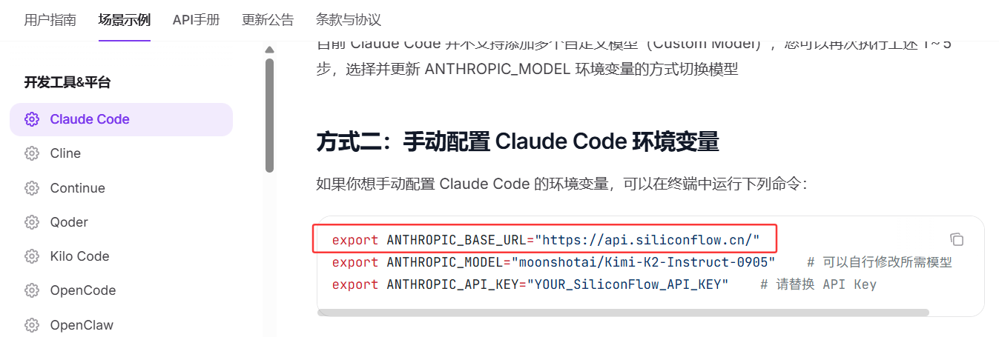
本地环境配置指南
1. 添加供应商
回到 cc-Switch 客户端，点击添加新的服务供应商。
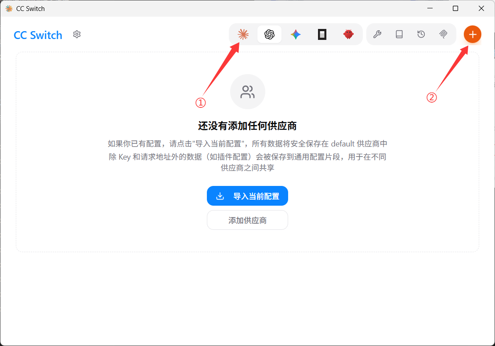
2. 填写配置信息
按照图中入口进入配置页面，向下滚动，把刚才准备好的词元.fast 凭证填入对应位置。
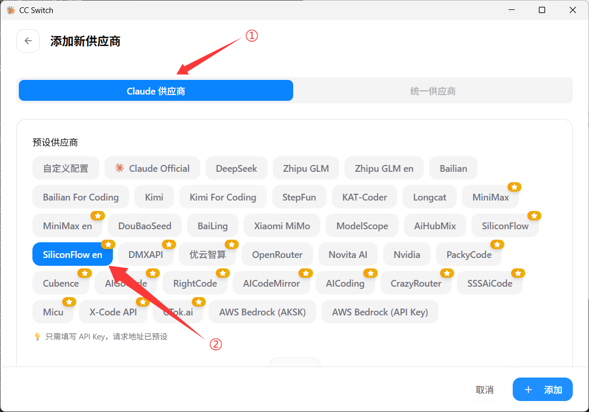
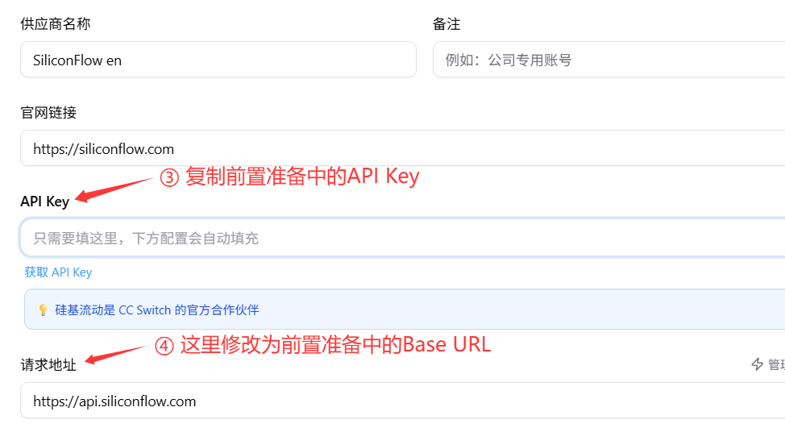
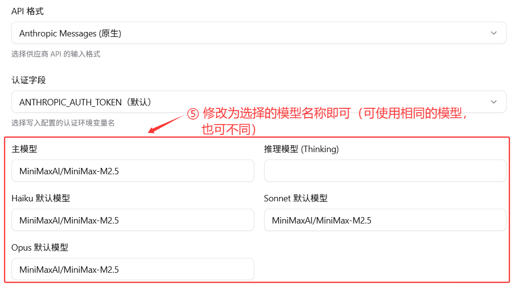
其他高级配置按需修改。最后核对 Provider 名称、Base URL、API Key 和模型名称，确认无误后点击添加。
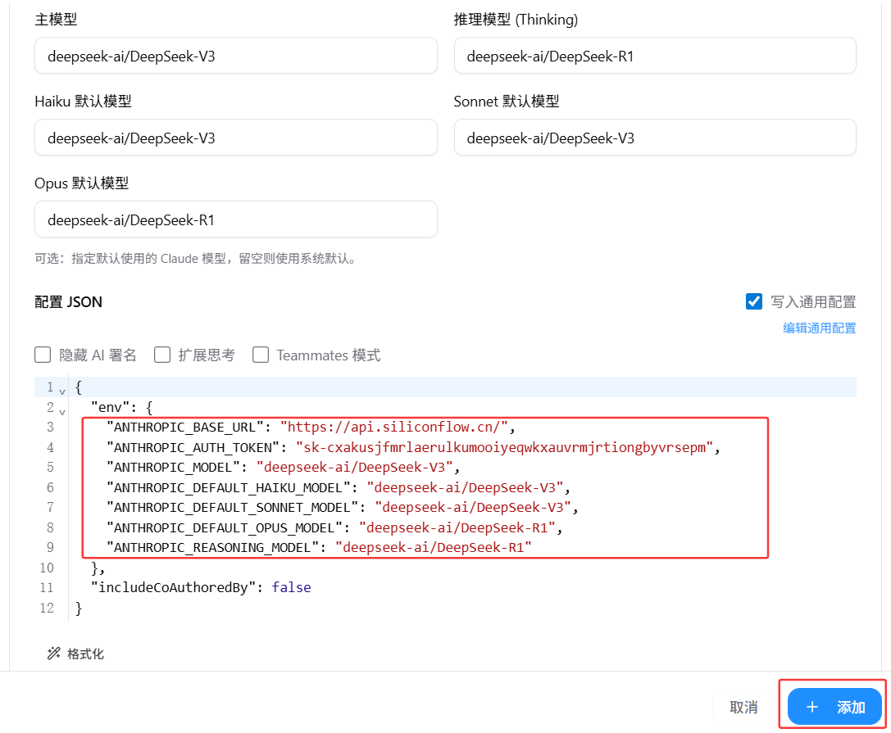
3. 启动 Claude Code
重新打开 VS Code 中的 Claude Code 扩展。如果无需登录官方账号、直接进入对话窗口，说明本地配置已生效。
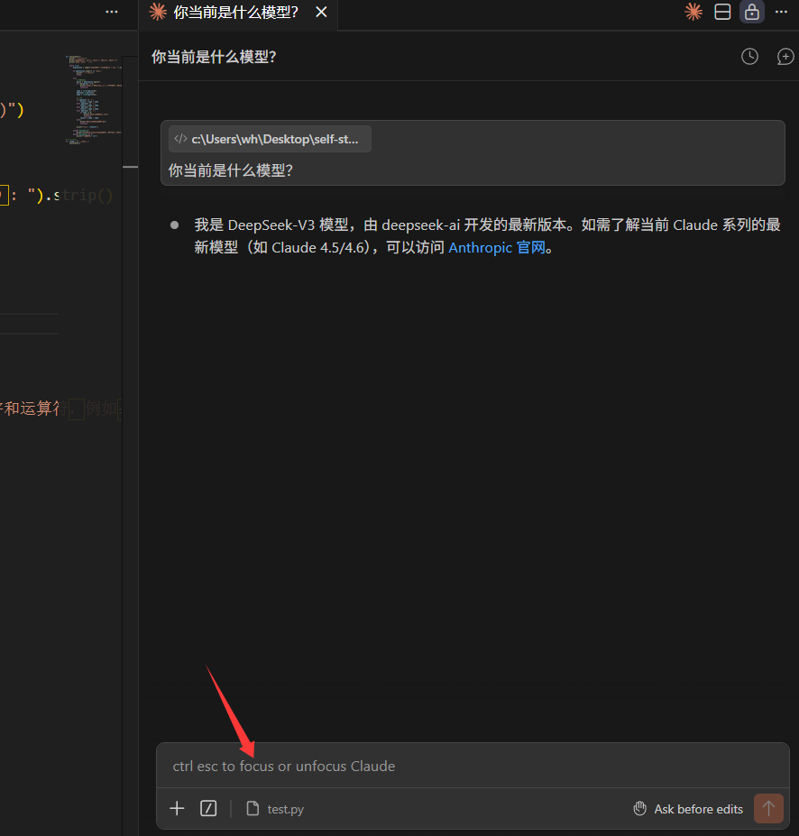
远程环境（Remote - SSH）配置指南
1. 开启本地代理服务
如果你通过 VS Code Remote - SSH 在远程服务器里使用 Claude Code，需要先在本机 cc-Switch 中开启本地代理，并记住生成的服务地址与端口。
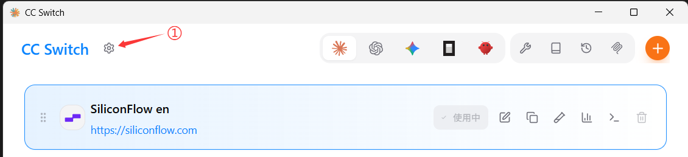
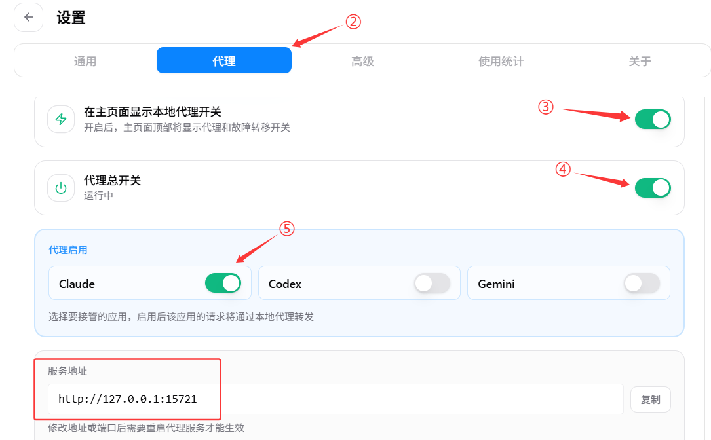
2. 验证代理状态
点击图中入口打开终端，在 Windows 终端执行下面命令。如果打开的配置文件中包含代理信息，说明代理开启成功，复制红框里的内容备用。
notepad "%USERPROFILE%\.claude\settings.json"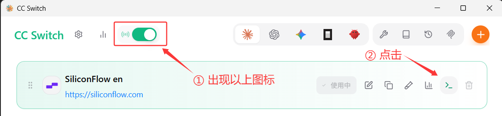
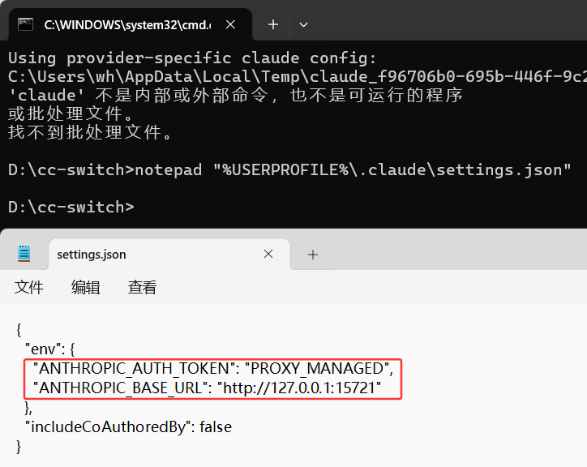
3. 配置 Remote - SSH 端口转发
确认 VS Code 已安装 Remote - SSH 插件。编辑 SSH 连接配置文件，为目标服务器添加 RemoteForward，把远程端口转发到本机 cc-Switch 代理端口。
RemoteForward 127.0.0.1:代理端口 127.0.0.1:本机代理端口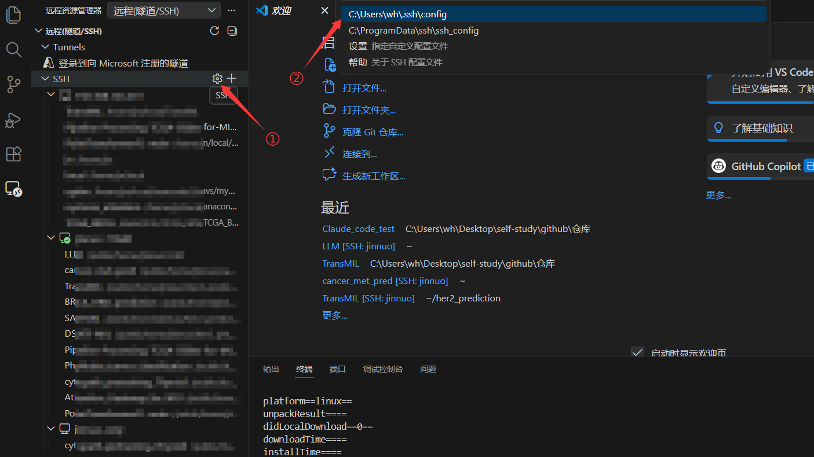
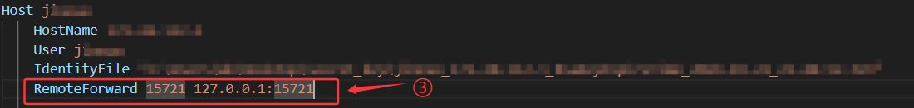
4. 配置远程 Claude Code 扩展
在远程服务器上安装 Claude Code 扩展，然后进入扩展环境配置，把前面复制的代理地址和密钥填入对应字段。
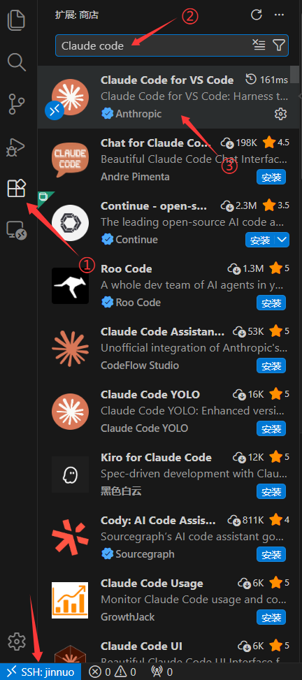
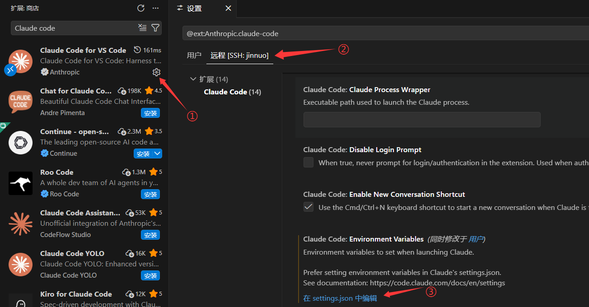
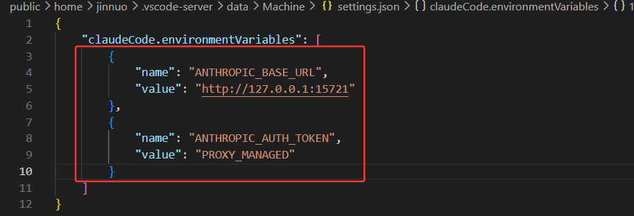
5. 完成配置并运行
点击远程环境里的 Claude Code 图标。如果直接进入对话界面，说明远程配置成功。
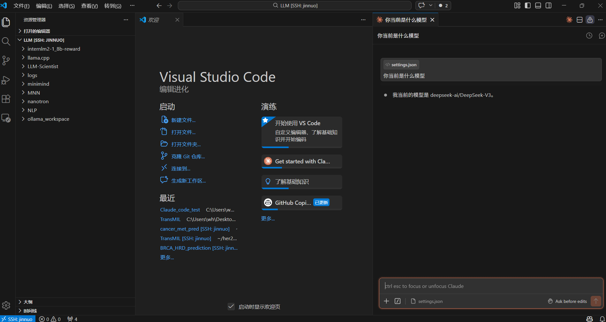
安装方式
macOS（推荐 Homebrew）
brew tap farion1231/ccswitch
brew install --cask cc-switchWindows
从 Releases 下载 .msi 安装包或便携版 .zip。
Linux
从 Releases 下载 .deb 包或 .AppImage。
ArchLinux 用户：
paru -S cc-switch-binWeb 版本（无头 / SSH 服务器）
wget https://github.com/farion1231/cc-switch/releases/latest/download/cc-switch-web-linux-x64.tar.gz
tar -xzf cc-switch-web-linux-x64.tar.gz
cd cc-switch-web/
./cc-switch-web默认端口 17666，通过浏览器访问 http://localhost:17666。